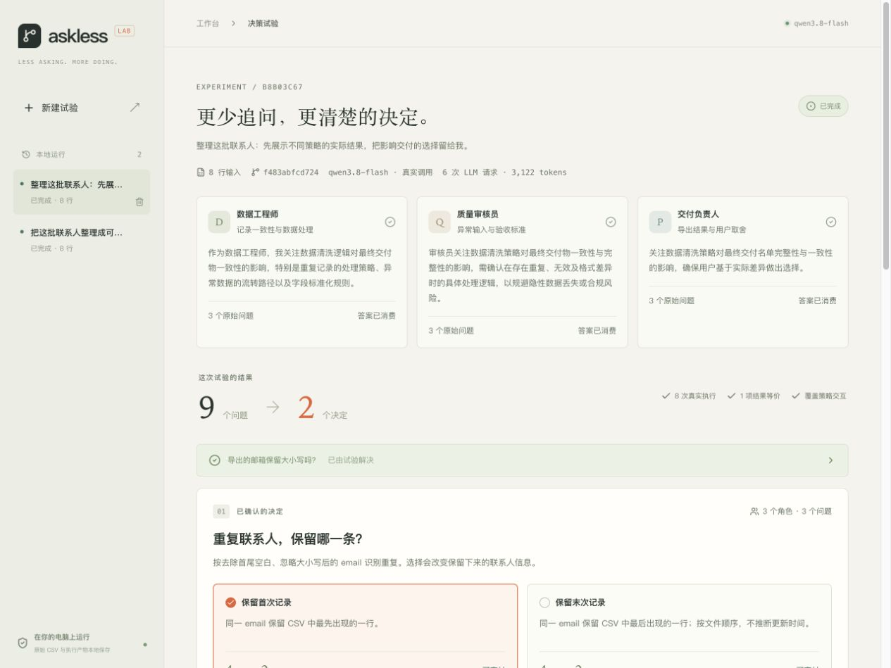

Make the question executable.
Three roles ask within explicit policy contracts. Shared contracts and an exact input hash bring repeated questions together.
Your agents have questions. Let them run the alternatives first. Bring you the decisions that actually change the outcome.
Local-first. MIT licensed. Built for a little more focus.
Human attention is a resource.
Agents should spend it carefully.
A choice deserves your attention when it changes something you care about. AskLess makes that difference visible.
Three roles ask within explicit policy contracts. Shared contracts and an exact input hash bring repeated questions together.
Execute all eight policy combinations. Compare outputs, quarantined rows, and blocking status across every interaction.
Resolve equivalent choices for this input. Show you the differences for the rest, then propagate your policy and verify the result.
Eight contact rows. Two duplicates.
Two invalid emails.
Explore the decisions
that survive compilation.
The sample has two remaining decisions: keep the first or last duplicate, and quarantine invalid emails or block the batch. Enable JavaScript to compare the saved branch outputs.
Interactive walkthrough · Results precomputed by the real CSV executor from the included sample. No model calls in this page.
Follow the original questions, inspect branch outputs, make the call, and take the evidence with you.

CSV data, branches, and decisions live in local SQLite. The model receives your task and aggregate statistics.
Every choice is scoped to the input. Three explicit policy receipts and matching result hashes close the loop.
One Python service and a browser. Use a remote LLM, or try the deterministic offline mode. No model downloads.
v0.1 is a bounded contact CSV experiment: three roles, three fixed policy contracts, one shared deterministic executor. In the included sample, nine protocol-generated questions become two human decisions.
The next research question: how far can this approach travel into richer agent workflows? General coding-agent integrations, new adapters, and measured attention savings are open directions.
Build the next experiment with us
Clone it. Start it. Bring a small CSV.
Your first run can be
completely offline.
git clone https://github.com/ouyangyipeng/askless.git
cd askless
./run.sh
Python 3.12+ · uv · Node 24.15+ · pnpm 12
Setup & model configuration